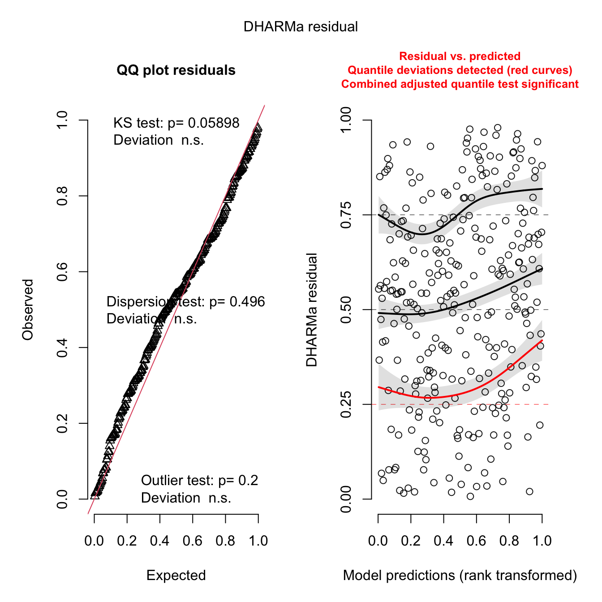
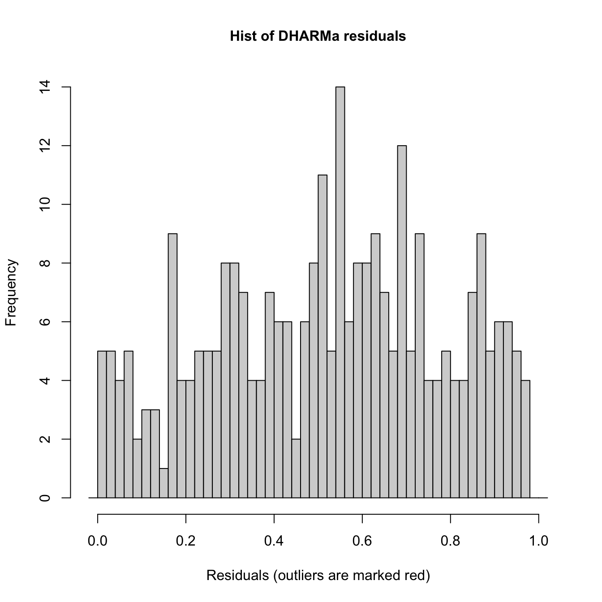
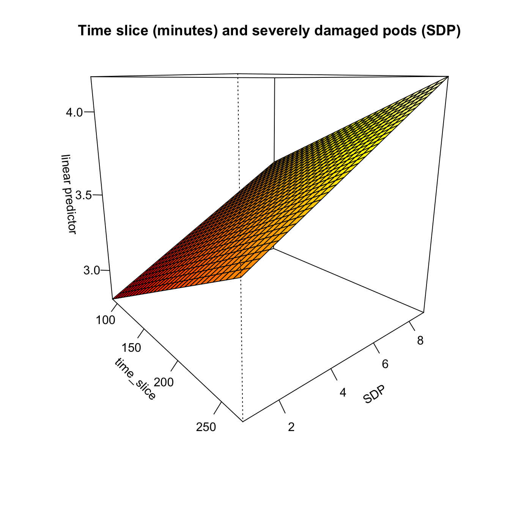
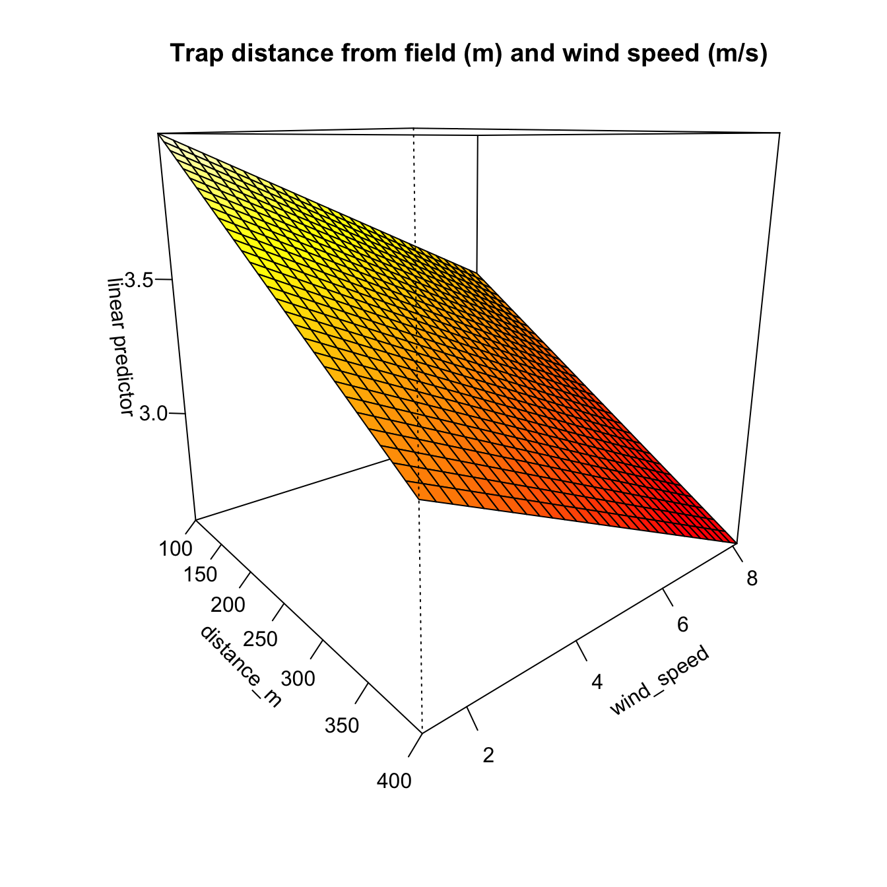
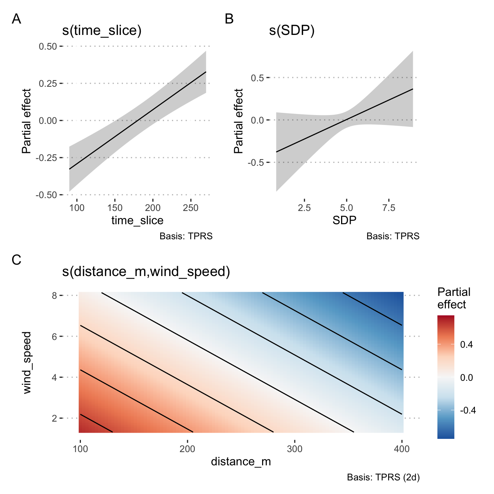
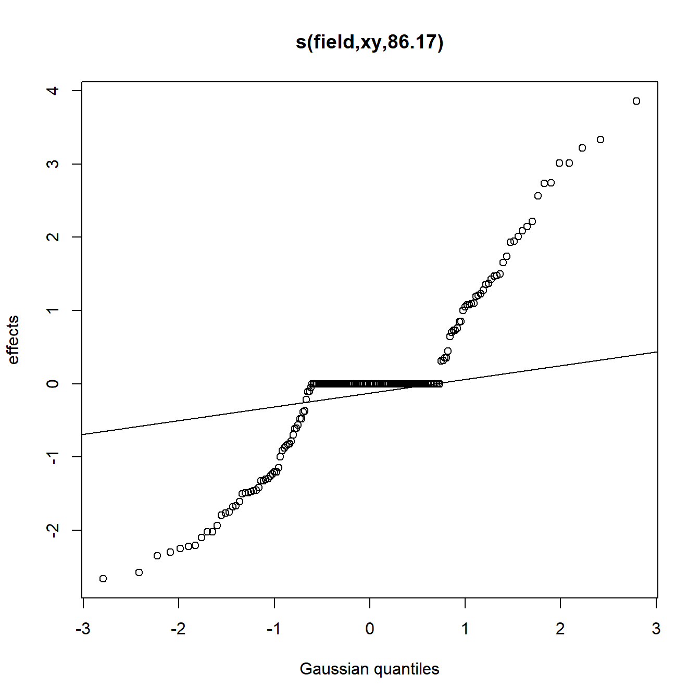
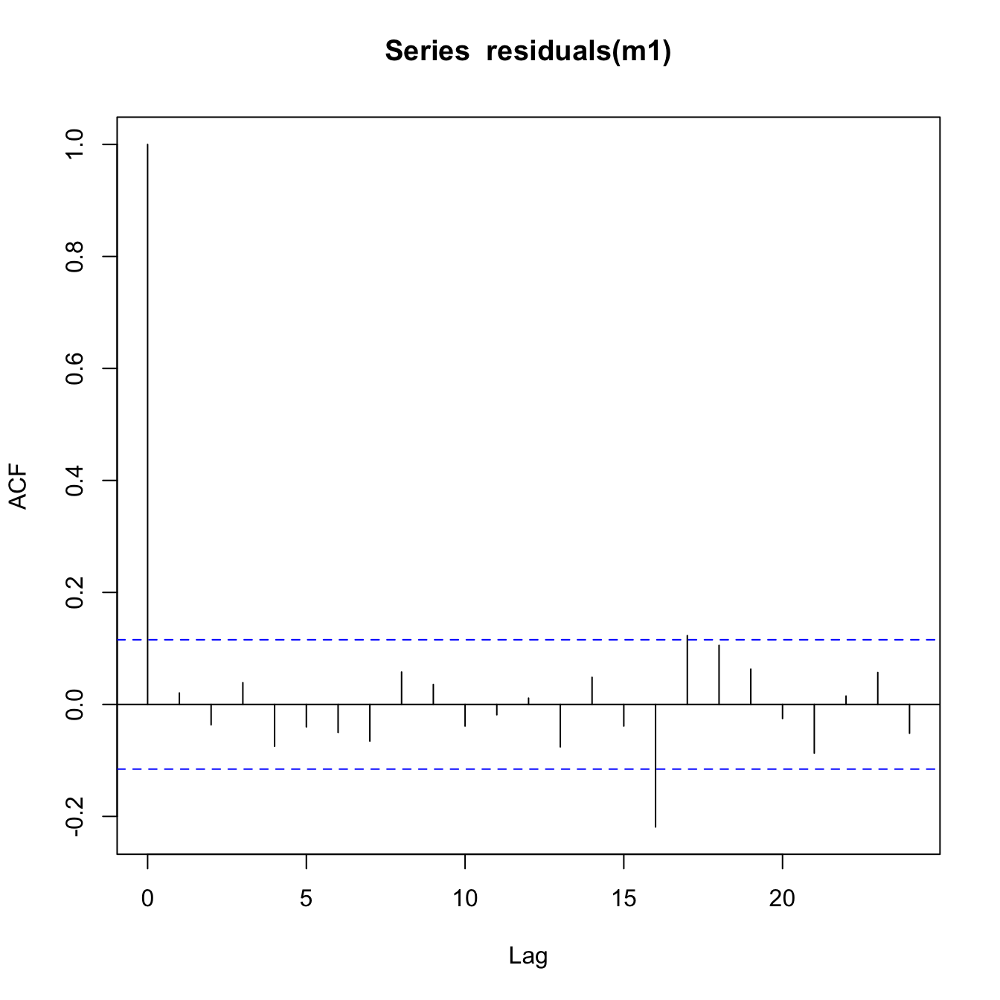
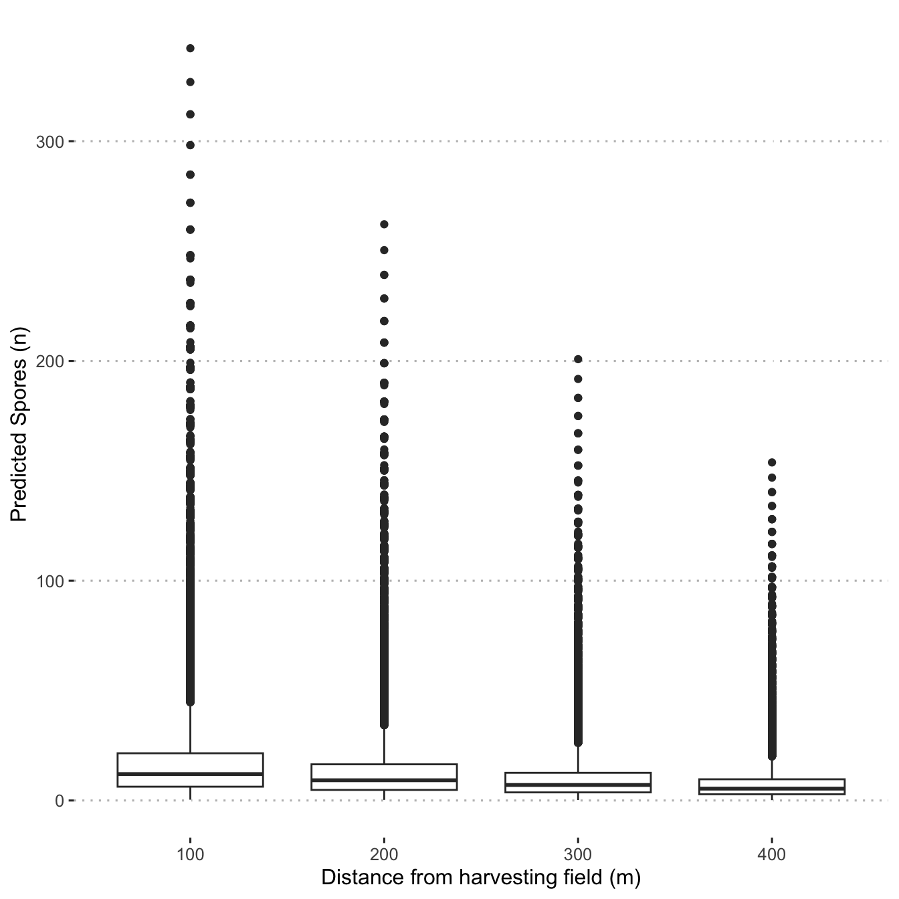

Fit GAM model of spore counts
Load libraries
library("tidyverse")
library("ggpubr")
library("gratia")
library("here")
library("mgcv")
library("DHARMa")
theme_set(theme_pubclean())Spore proportion chi-squared analysis
Check if the spore type, number of nuclei, affects the dispersal.
Using the default chisq.test() will result in a warning
due to small expected values meaning that approximations of p may not be
correct.
Warning message: In chisq.test(.) : Chi-squared approximation may be incorrect
Therefore, we will use Monte Carlo simulation to simulate p values.
(Manuscript’s section Results/3.2)
set.seed(3)
x <- read_csv(here("data/spore_type.csv"),
show_col_types = FALSE) %>%
group_by(meter, spore_nuclei) %>%
summarise(n = sum(count), .groups = 'drop') %>%
spread(spore_nuclei, n) %>%
column_to_rownames('meter') %>%
chisq.test(simulate.p.value = TRUE) The major spore type spread expected was the individual spore having a smaller spore size (18.8 µm); however, no statistical differences were recorded in spore type proportion at 100 m to 400 m downwind (P = 0.195902, X-squared = 20.6561456).
Spore dispersal GAM Model
(Manuscript’s section Results/3.3)
Load data
load(here("data/mod_dat.Rdata"))
sdp_dat <- read_csv(here("data/sdp_data.csv"),
show_col_types = FALSE,
col_types = list(field = col_factor())) %>%
arrange(field) %>%
select(field, inc, SDP, DSI) %>%
mutate(field = as.factor(field))
# summarise SDP index by field and create a binomial variable w/ cutoff @ 5 ----
ps_inc <-
sdp_dat %>%
group_by(field) %>%
summarise(SDP = mean(SDP))
mod_dat <- left_join(mod_dat, ps_inc, by = c("field"))Inspect the mod_dat object
mod_dat %>% # str
distinct(field, trap_coord, .keep_all = TRUE) %>%
select(trap_coord,
trap_degrees,
degree_dif,
wind_degrees,
wind_speed,
distance_m,
SDP,
n_spore) %>%
print(n = Inf)## # A tibble: 24 x 9
## # Groups: field [6]
## field trap_coord trap_degrees degree_dif wind_degrees wind_speed distance_m
## <fct> <chr> <dbl> <dbl> <dbl> <dbl> <dbl>
## 1 1 N 0 -76.2 76.2 1.49 100
## 2 1 E 90 13.8 76.2 1.49 100
## 3 1 W 270 194. 76.2 1.49 100
## 4 1 S 180 104. 76.2 1.49 100
## 5 2 N 0 -201. 201. 7.27 100
## 6 2 E 90 -111. 201. 7.27 100
## 7 2 W 270 68.7 201. 7.27 100
## 8 2 S 180 -21.3 201. 7.27 100
## 9 3 NE 45 -90.3 135. 2.93 100
## 10 3 SE 135 -0.313 135. 2.93 100
## 11 3 NW 315 180. 135. 2.93 100
## 12 3 SW 225 89.7 135. 2.93 100
## 13 4 N 0 -35.9 35.9 3.90 100
## 14 4 E 90 54.1 35.9 3.90 100
## 15 4 W 270 234. 35.9 3.90 100
## 16 4 S 180 144. 35.9 3.90 100
## 17 5 NE 45 15.1 29.9 3.92 100
## 18 5 SE 135 105. 29.9 3.92 100
## 19 5 NW 315 285. 29.9 3.92 100
## 20 5 SW 225 195. 29.9 3.92 100
## 21 6 N 0 -2.16 2.16 7.57 100
## 22 6 E 90 87.8 2.16 7.57 100
## 23 6 W 270 268. 2.16 7.57 100
## 24 6 S 180 178. 2.16 7.57 100
## # i 2 more variables: SDP <dbl>, n_spore <dbl>Based on the use of AIC to evaluate model fit to the data, the
following GAM best fit the data with the smoothed time slice variables,
s(time_slice); a smoothed term for the the distance of the
traps from the field and wind speed,
s(distance_m, wind_speed); a smoothed term for the severely
damaged pods, s(SDP) and the field and traps themselves as
a smoothed term random effect, s(field, xy)
using a negative binomial family, nb().
# create a factor for the trap locations in Cartesian coords to be used as a random effect
mod_dat$xy <- as.factor(paste(mod_dat$x, mod_dat$y))
m1 <- gam(
n_spore ~ s(time_slice, k = 3) +
s(distance_m, wind_speed, k = 50) +
s(SDP, k = 6) +
s(field, xy, bs = "re"),
data = mod_dat,
select = TRUE,
method = "REML",
family = nb()
)Inspect Model m1
summary(m1)##
## Family: Negative Binomial(2.483)
## Link function: log
##
## Formula:
## n_spore ~ s(time_slice, k = 3) + s(distance_m, wind_speed, k = 50) +
## s(SDP, k = 6) + s(field, xy, bs = "re")
##
## Parametric coefficients:
## Estimate Std. Error z value Pr(>|z|)
## (Intercept) 2.1871 0.1841 11.88 <2e-16 ***
## ---
## Signif. codes: 0 '***' 0.001 '**' 0.01 '*' 0.05 '.' 0.1 ' ' 1
##
## Approximate significance of smooth terms:
## edf Ref.df Chi.sq p-value
## s(time_slice) 0.9730 2 37.28 <2e-16 ***
## s(distance_m,wind_speed) 1.4980 48 1221.93 0.0171 *
## s(SDP) 0.7341 5 620.54 0.0576 .
## s(field,xy) 86.1747 95 1204.66 <2e-16 ***
## ---
## Signif. codes: 0 '***' 0.001 '**' 0.01 '*' 0.05 '.' 0.1 ' ' 1
##
## R-sq.(adj) = 0.739 Deviance explained = 89.2%
## -REML = 1073.2 Scale est. = 1 n = 288Check model m1
gam.check(m1)
##
## Method: REML Optimizer: outer newton
## full convergence after 11 iterations.
## Gradient range [-0.0002416798,0.0002309939]
## (score 1073.208 & scale 1).
## Hessian positive definite, eigenvalue range [5.501528e-06,53.4399].
## Model rank = 249 / 249
##
## Basis dimension (k) checking results. Low p-value (k-index<1) may
## indicate that k is too low, especially if edf is close to k'.
##
## k' edf k-index p-value
## s(time_slice) 2.000 0.973 0.96 0.50
## s(distance_m,wind_speed) 49.000 1.498 1.01 0.92
## s(SDP) 5.000 0.734 0.93 0.35
## s(field,xy) 192.000 86.175 NA NAsummary(m1)##
## Family: Negative Binomial(2.483)
## Link function: log
##
## Formula:
## n_spore ~ s(time_slice, k = 3) + s(distance_m, wind_speed, k = 50) +
## s(SDP, k = 6) + s(field, xy, bs = "re")
##
## Parametric coefficients:
## Estimate Std. Error z value Pr(>|z|)
## (Intercept) 2.1871 0.1841 11.88 <2e-16 ***
## ---
## Signif. codes: 0 '***' 0.001 '**' 0.01 '*' 0.05 '.' 0.1 ' ' 1
##
## Approximate significance of smooth terms:
## edf Ref.df Chi.sq p-value
## s(time_slice) 0.9730 2 37.28 <2e-16 ***
## s(distance_m,wind_speed) 1.4980 48 1221.93 0.0171 *
## s(SDP) 0.7341 5 620.54 0.0576 .
## s(field,xy) 86.1747 95 1204.66 <2e-16 ***
## ---
## Signif. codes: 0 '***' 0.001 '**' 0.01 '*' 0.05 '.' 0.1 ' ' 1
##
## R-sq.(adj) = 0.739 Deviance explained = 89.2%
## -REML = 1073.2 Scale est. = 1 n = 288vis.gam(
m1,
theta = 50,
view = c("time_slice", "SDP"),
ticktype = "detailed",
main = "Time slice (minutes) and severely damaged pods (SDP)"
)
vis.gam(
m1,
view = c("distance_m", "wind_speed"),
theta = 50,
ticktype = "detailed",
main = "Trap distance from field (m) and wind speed (m/s)"
)
plot(m1)
# check residuals using DHARMa
simulateResiduals(m1, plot = TRUE)## Object of Class DHARMa with simulated residuals based on 250 simulations with refit = FALSE . See ?DHARMa::simulateResiduals for help.
##
## Scaled residual values: 0.5966348 0.326032 0.8509289 0.7496079 0.5238095 0.1691754 0.6283619 0.8696426 0.4010286 0.0693676 0.9301913 0.7374863 0.644 0.8741518 0.1604343 0.01793573 0.6495237 0.3167456 0.4143331 0.5420092 ...The model fully converged after 11 iterations. All of the predictive factors included were significant at P > 0.1 and the model had an adjusted R2 value of 0.726.
The gam.check() residuals show a slight pattern in the
Residuals vs. linear predicted values, but this is to be expected with
the zero values and negative binomial family, nb(), that
was used to fit the model. The QQ-plot appears to be reasonable as does
the histogram of residuals, and Response vs Fitted Values. To further
check the model’s fitness, there is a slight pattern in the DHARMa
residuals, but nothing to worry about too much in a small data set like
this while this QQ-plot and the associated tests all pass.
In all, this model looks to explain the spore dispersal data well enough for this data set.
Check for autocorrelation
Because the data represent spatially and temporally correlated data, it’s best to check for any autocorrelation in the residuals.
acf(residuals(m1))
pacf(residuals(m1))
This looks OK. There is no major pattern discernible in the ACF or PACF plots that show cause for concern.
Predict spore dispersal and visualise spore dispersal predictions
dist <- seq(100, 400, by = 100)
newd <- expand_grid(
wind_speed = 1:10,
SDP = seq(from = 0.5, to = 10, by = 0.5),
time_slice = unique(mod_dat$time_slice),
distance_m = unique(mod_dat$distance_m),
xy = unique(mod_dat$xy),
field = 1
)
newd$pred_n_spore <-
predict(
object = m1,
newd,
type = "response",
exclude = c("field", "xy")
)Visualize the spore dispersal predictions for traps at 100 m, 200 m, 300 m, 400 m around the harvest field for sampling times at 90, 180 and 270 minutes after harvest started.
predictions <-
newd %>%
ggplot(aes(x = as.factor(distance_m), y = pred_n_spore)) +
geom_boxplot() +
labs(x = "Distance from harvesting field (m)",
y = "Predicted Spores (n)")
predictions
ggsave(
predictions,
file = "plots_manuscript/spore_prediction.png",
w = 5,
h = 2,
scale = 1.2
)